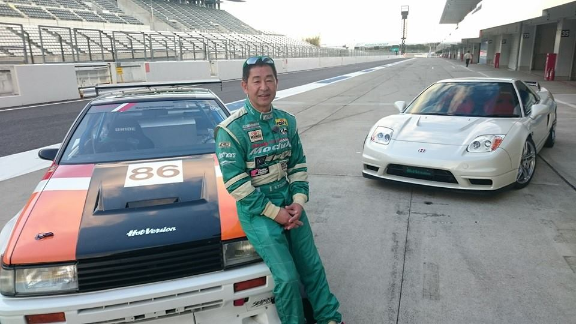
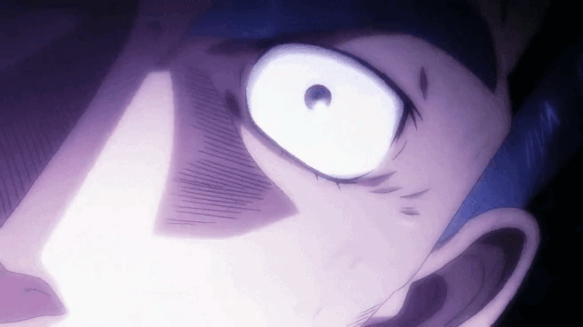
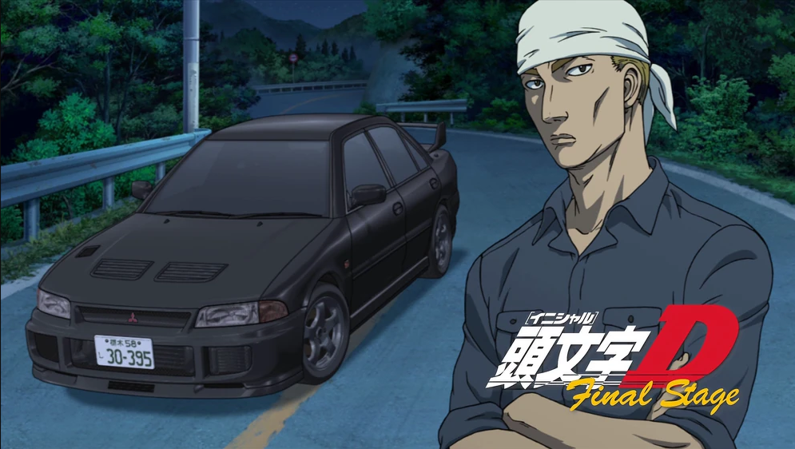
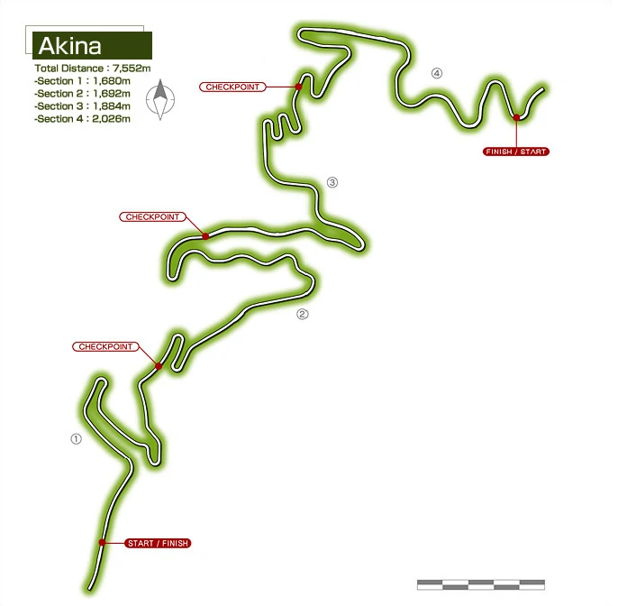

SPECIAL FEATURE
By:Darren Punzalan
9TH SEPTEMBER 2022
Initial D (Japanese: 頭文字イニシャル D, Hepburn: Inisharu Dī) is a
Japanese street racing manga series written and illustrated by Shuichi
Shigeno. It was serialized in Kodansha's seinen manga magazine Weekly
Young Magazine from 1995 to 2013, with the chapters collected into 48
tankōbon volumes. The story focuses on the world of illegal Japanese
street racing, where all the action is concentrated in the mountain
passes and rarely in cities or urban areas, and with the drifting racing
style emphasized in particular. Professional race car driver and pioneer
of drifting Keiichi Tsuchiya

helped with editorial supervision. The story
is centered on the prefecture of Gunma, more specifically on several mountains
in the Kantō region and in their surrounding cities and towns. Although some
of the names of the locations the characters race in have been fictionalized,
all of the locations in the series are based on actual locations in Japan.
Initial D has been adapted into several anime television and original
video animations series by OB Studio Comet, Studio Gallop, Pastel, A.C.G.T
and SynergySP. A live action film by Avex and Media Asia was released in 2005.
Both the manga and anime series were initially licensed for English-language
distribution in North America by Tokyopop (2002–2009). However, the anime
license has since been picked up by Funimation (now Crunchyroll), while the
manga was relicensed by Kodansha USA in 2019.
As of April 2021, Initial D had over 55 million copies in circulation,
making it one of the best-selling manga series in history.
Story:
Takumi Fujiwara is a student working as a gas station attendant with his
best friend Itsuki. Itsuki is enthusiastically interested in being a street
racer. The team he feels closest to and hopes to join is the Akina Speed
Stars, whose team leader Koichiro Iketani is also working at the same pump
station. Unbeknownst to his colleagues, Takumi helps out his father Bunta
as a tofu delivery driver for his father's store before sunrise each morning,
passively building an impressive amount of skill of over 5 years behind the
wheel of the family car, an aging Toyota Sprinter Trueno (AE86).

Shortly after the story begins, the Red Suns, a highly experienced racing team
from Mount Akagi led by Ryosuke Takahashi, challenge the local Speed Stars team
to a set of races on Mount Akina. Dispirited after watching the Red Suns' superior
performance during a practice run, the Speed Stars expect to lose. Later that night,
the Red Suns' #2 driver, Keisuke Takahashi, heading home after the last practice
run, is defeated soundly by a mysterious Sprinter Trueno, despite driving a much
more powerful Mazda RX-7 (FD3S).

An investigation into the identity of the driver
leads to Bunta Fujiwara, Takumi's father. While trying to do his best for the team
on Mount Akina, Iketani suffers a crash and damages his car and injures himself.
He is unable to take part in the race to represent his team. Iketani begs Bunta
to help the Speed Stars defeat the Red Suns, and he initially refuses, later
relenting to "maybe" show up at the race. At the same time, Takumi asks Bunta
if he can borrow the car for a day to take a trip to the beach with a potential
girlfriend (Natsuki Mogi), and Bunta seizes the moment by granting permission
(plus a full tank of fuel) on the condition that Takumi defeats Keisuke.
On the night of the race, the Trueno does not show up, and the Speed Stars
enlist a backup driver (Kenji) for the first run. At the last moment before the race
starts, the AE86 arrives. Takumi steps out of the car to the bewilderment of the Speed
Stars, who were expecting Bunta. He easily defeats Keisuke by utilizing a
dangerous "gutter run" technique (putting both the left/right tires into the
gutters to prevent centrifugal force pushing the car outward) on the mountain
road's hairpin corners.

The Red Suns' embarrassing defeat sets up the plot for the rest of the series:
drivers from neighboring prefectures come to challenge Takumi and the "Legendary
Eight-Six of Akina" and thus prove themselves as racers. Meanwhile, Takumi, who was
considered spacey and disinterested in the world around him, becomes more passionate
about racing with every opponent he faces. However, soon Takumi faces a threat in the
form of Emperors, a team that uses Mitsubishi Lancer Evolutions.

Takumi's old AE86 is
no match and he loses to the team's leader, Sudo Kyoichi (EvoIII), blowing his engine.
The Akagi RedSuns come to the rescue and defeat both Seiji and Kyoichi, thus securing the
pride of Gunma's racers. Meanwhile, Bunta replaces the AE86's blown engine with a new one.
Wataru Akiyama and Koichiro Iketani help Takumi to figure out why he is unable to control
his car. Takumi soon faces graduation, but continues racing. He defeats Kyoichi in a rematch
at his home course, the Nikko Irohazaka. He also defeats the son of Bunta's old rival.
Eventually, the plot moves away from Mount Akina as Takumi becomes bored with racing and
winning solely on that road. He joins an expedition racing team, Project.D, formed by
Ryosuke Takahashi, (also including Keisuke Takahashi) former leader of the disbanded Red
Suns and challenges more difficult opponents on their home courses in the pursuit of his
dream to be "the fastest driver out there". At one point, impostors in the form of Takumi
and Keisuke try to defame Project D, Wataru comes to help and they dispatch the impostors,
revealing them in front of the public. Project D races many teams like Team Seven Star Leaf,
Team 246, Team Spiral, and Team Sidewinder. It ends spectacularly with a race of a couple evenly
matched drivers, where Takumi blows his engine again, but steps on the clutch and wins the race
by rolling backwards over the finish line. He decides to get rid of his car but later decides
to keep it. Ryosuke disbands Project D and Takumi continues delivering tofu with his father's Impreza.
The Initial D events would be shown to lead up to the events of another manga by Shuichi Shigeno, MF Ghost.
Here is one of the famous landmarks that these events took place
Akina
Mount Haruna (榛名山 Haruna-san) is a dormant stratovolcano in Takasaki, Gunma. Mount Haruna, along with Myogi and Akagi, is one of the "Three Mountains of Jōmō" (上毛三山). Haruna appears in Initial D under the name Akina (秋名). Akina pass, as referred to by the characters, is actually Jomo-Sanzan Panorama Highway. Bunta Fujiwara holds the fastest downhill record at Mt. Akina and was the original best driver before his son. It is here that, Takumi Fujiwara delivers tofu everyday to a hotel uphill, using his Toyota Sprinter Trueno (AE86). It is also where Takumi won his first few races and the home course for the racing team called the Akina SpeedStars. Due to his great victories, unbeatable track records and his downhill driving technique using an AE86 against much more powerful vehicles, Takumi and the AE86 gain popularity which is referred as 'Akina's 86'. The Akina pass is also famous for its five consecutive hairpin turns.
Here is the list if you want to watch Initial D
- Initial D (referred to retroactively as "First Stage") — 26 episodes (1998)
- Initial D Second Stage — 13 episodes (1999)
- Initial D Extra Stage — 2-episode OVA side-story focusing on Impact Blue (2000)
- Initial D Third Stage — a 104-minute movie (2001)
- Initial D Fourth Stage — 24 episodes (2004–2006)
- Initial D Extra Stage 2 — a 50-minute OVA side-story focusing on Mako and Iketani (2008)
- Initial D Fifth Stage — 14 episodes (2012–2013)
- Initial D: Final Stage — 4 episodes (TV), compilation movie
- New Initial D the Movie - Legend 1: Awakening — feature movie (2014)
- New Initial D the Movie - Legend 2: Racer — feature movie (2015)
- New Initial D the Movie - Legend 3: Dream — feature movie (2016)